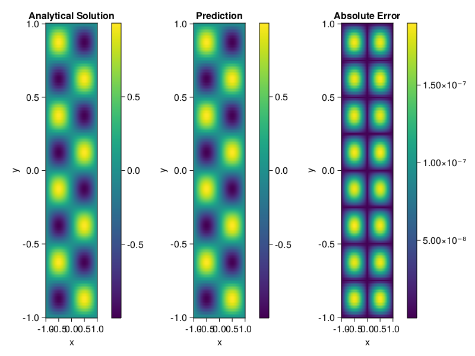

Helmholtz equation
Let us consider the Helmholtz equation in two space dimensions
\[\begin{aligned} &\Delta u(x, y)+k^{2} u(x, y)=q(x, y), \quad(x, y) \in \Omega:=(-1,1)^2 \\ &u(x, y)=0, \quad(x, y) \in \partial \Omega \end{aligned}\]
where
\[q(x, y)=-\left(a_{1} \pi\right)^{2} \sin \left(a_{1} \pi x\right) \sin \left(a_{2} \pi y\right)-\left(a_{2} \pi\right)^{2} \sin \left(a_{1} \pi x\right) \sin \left(a_{2} \pi y\right)+k^{2} \sin \left(a_{1} \pi x\right) \sin \left(a_{2} \pi y\right).\]
The excat solution is $u(x,y)=\sin{a_1\pi x}\sin{a_2\pi y}$. We chose $k=1, a_1 = 1$ and $a_2 = 4$.
using ModelingToolkit, IntervalSets, Sophon, Lux
using Optimization, OptimizationOptimJL
@parameters x,y
@variables u(..)
Dxx = Differential(x)^2
Dyy = Differential(y)^2
a1 = 1
a2 = 4
k = 1
q(x,y) = -(a1*π)^2 * sin(a1*π*x) * sin(a2*π*y) - (a2*π)^2 * sin(a1*π*x) * sin(a2*π*y) + k^2 * sin(a1*π*x) * sin(a2*π*y)
eq = Dxx(u(x,y)) + Dyy(u(x,y)) + k^2 * u(x,y) ~ q(x,y)
domains = [x ∈ Interval(-1,1), y ∈ Interval(-1,1)]
bcs = [u(-1,y) ~ 0, u(1,y) ~ 0, u(x, -1) ~ 0, u(x, 1) ~ 0]
@named helmholtz = PDESystem(eq, bcs, domains, [x,y], [u(x,y)])\[ \begin{align} \frac{\mathrm{d}^{2}}{\mathrm{d}x^{2}} u\left( x, y \right) + \frac{\mathrm{d}^{2}}{\mathrm{d}y^{2}} u\left( x, y \right) + u\left( x, y \right) =& - 166.7832748185191 \sin\left( 3.141592653589793 x \right) \sin\left( 12.566370614359172 y \right) \end{align} \]
Note that the boundary conditions are compatible with periocity, which allows us to apply BACON.
chain = BACON(2, 1, 5, 2; hidden_dims = 32, num_layers=5)
pinn = PINN(chain) # call `gpu` on it if you want to use gpu
sampler = QuasiRandomSampler(300, 100)
strategy = NonAdaptiveTraining()
prob = Sophon.discretize(helmholtz, pinn, sampler, strategy)
@time res = Optimization.solve(prob, BFGS(); maxiters=1000)u: ComponentVector{Float64}(filters = (filter_1 = (bias = [0.7340530807716852; 0.9214734312655711; … ; -0.8170001994354408; 0.7000994300912834;;]), filter_2 = (bias = [0.8849551592252054; 0.8019257715596627; … ; 0.09159230892070148; -0.22890800571380787;;]), filter_3 = (bias = [-0.17669693078983265; 0.4896012297853129; … ; -0.9014717405056982; 0.9278526035474637;;]), filter_4 = (bias = [0.20937902757370086; 0.549452994517771; … ; -0.6591827006854423; 0.8827575298066582;;]), filter_5 = (bias = [-0.5415093578346925; 0.7625104868741271; … ; -0.5834512673829139; -0.9575154973092667;;])), linear_layers = (layer_1 = (weight = [0.05136532920402667 -0.14968755701793934 … -0.40039163760910335 0.10061915583901923; 0.22815624010000526 0.08646152490145254 … 0.24440826910548594 0.16985592137342426; … ; 0.31526683085521184 0.28115015709225155 … -0.07416878854564167 -0.2737936073416432; -0.16406499136370603 -0.05428560076797203 … 0.06819526047496317 -0.41934008068070183], bias = [-0.012727681761475682; 0.031043576813776536; … ; -0.035034873209024577; -0.04336695114810047;;]), layer_2 = (weight = [0.03913371791093136 0.4604745422557936 … -0.09633982530309311 -0.19678320250660444; -0.008081136165224271 -0.027067569654147337 … -0.14516494393861012 -0.24785731734636698; … ; 0.26541592445240775 0.047939950019985855 … -0.06110042261143988 0.30623128649324016; -0.2401394157499619 -0.3042435230785285 … 0.42419993291028624 -0.22225681475271739], bias = [-0.03583414470535444; 0.0023451529323127163; … ; -0.02681445014790115; -0.0076783867338671;;]), layer_3 = (weight = [-0.08176794475558069 0.2836659340924974 … -0.41340053706046914 -0.24026426641909884; 0.14355566010163606 0.39701527042531515 … 0.19305936978704089 -0.38286134209251493; … ; -0.4377960155930972 0.26522963819521805 … 0.08151214640516634 0.00022119356174364583; 0.20233910670796829 -0.046912351644838056 … 0.03934886849146531 -0.22972222721010796], bias = [-0.012131830804093469; -0.015978974044099245; … ; -0.02009346833544644; -0.004500317550592746;;]), layer_4 = (weight = [-0.3973495607049236 0.2992911858182645 … -0.16282711263448843 0.10855395063289548; -0.31787907536578597 0.13247378344197916 … -0.38967737423966864 -0.37035363828672535; … ; -0.3478706192727745 0.06052512508808015 … -0.016252615300324662 0.315082466051736; -0.23566035396923218 -0.2281116151727789 … -0.14994825552320445 -0.13188737043331158], bias = [-5.6804468004110285e-5; -0.02467375971927475; … ; -0.003711963584806513; -0.0059638398640644965;;])), output_layer = (weight = [0.005357824528265054 -0.27483796319389936 … 0.32868274510081674 -0.13581289800702107], bias = [0.012208213336122233;;]))Let's plot the result.
phi = pinn.phi
xs, ys= [infimum(d.domain):0.01:supremum(d.domain) for d in domains]
u_analytic(x,y) = sinpi(a1*x)*sinpi(a2*y)
u_real = [u_analytic(x,y) for x in xs, y in ys]
phi_cpu = cpu(phi) # in case you are using GPU
ps_cpu = cpu(res.u)
u_pred = [sum(phi_cpu(([x,y]), ps_cpu)) for x in xs, y in ys]
using CairoMakie
axis = (xlabel="x", ylabel="y", title="Analytical Solution")
fig, ax1, hm1 = heatmap(xs, ys, u_real, axis=axis)
Colorbar(fig[:, end+1], hm1)
ax2, hm2= heatmap(fig[1, end+1], xs, ys, u_pred, axis= merge(axis, (;title = "Prediction")))
Colorbar(fig[:, end+1], hm2)
ax3, hm3 = heatmap(fig[1, end+1], xs, ys, abs.(u_pred-u_real), axis= merge(axis, (;title = "Absolute Error")))
Colorbar(fig[:, end+1], hm3)
fig